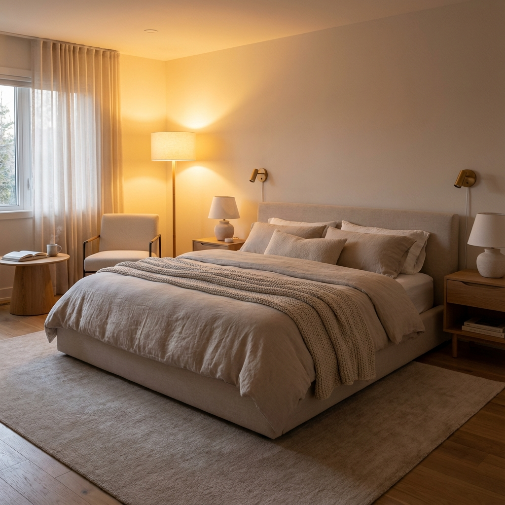
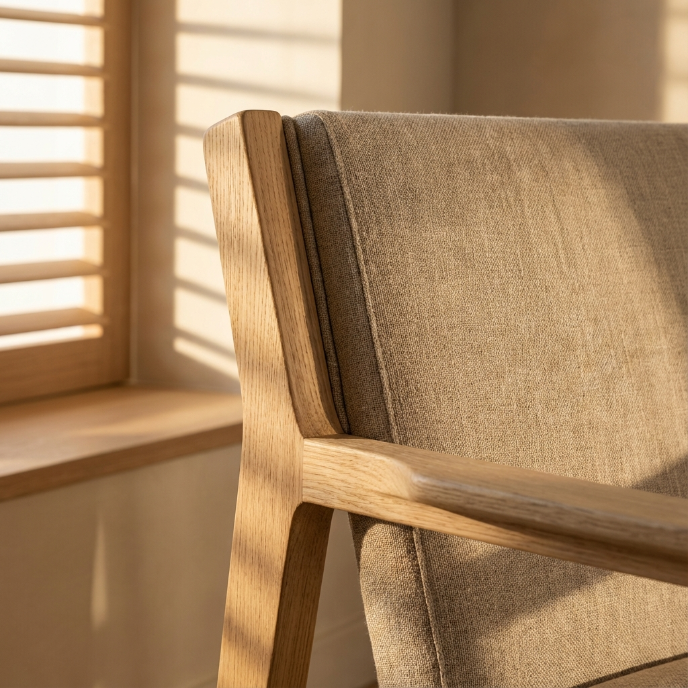

Designed as a sanctuary for rest and relaxation, this master suite emphasizes softness and tranquility. We selected a monochromatic beige palette with varied textures—linen, wool, and velvet—to add depth without visual clutter.
The custom headboard serves as the focal point, extending across the wall to ground the space. Warm ambient lighting was carefully layered to allow for different moods, from bright morning energy to a dim, cozy evening retreat.

